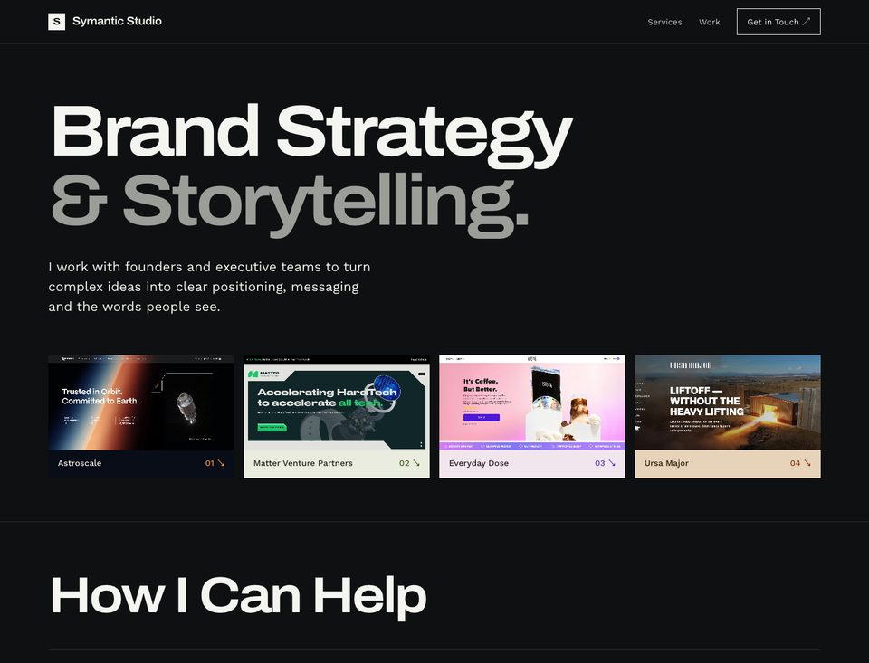
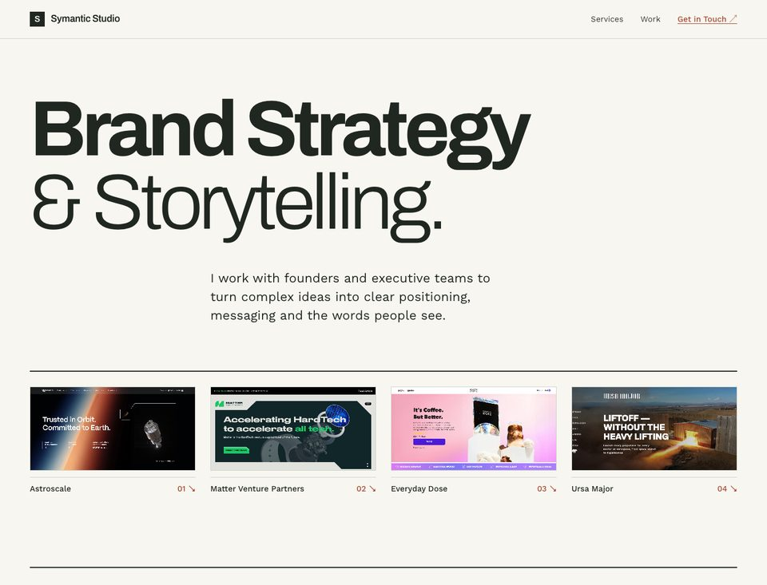
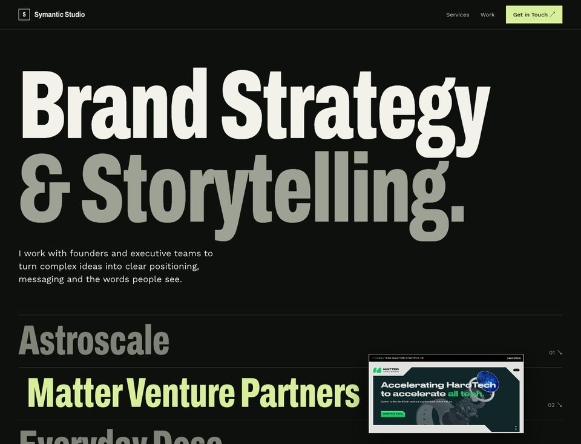

Same words, links and section order in each. Only the look and feel changes. Each opens as a full working page.

A
Client Worlds
The Matter panel becomes the system. Every project lives in a panel coloured from its own screenshot; the site's own chrome stays neutral.
- Strongest at
- Color and variety with one consistent template. Closest to what you already liked.
- Tradeoff
- Many client palettes on one page; the studio's own identity is quieter.
Open Client Worlds →

B
Journal
A light studio monograph on the CV's paper and terracotta. Strict grid, hairline rules, screenshots framed like plates.
- Strongest at
- Reads as a writer's practice: calm, precise, and visually one system with the CV.
- Tradeoff
- Least dramatic of the three; it earns attention through restraint.
Open Journal →

C
Index
Dark and type-led. Client names become a huge condensed index with hover previews; projects run as full-bleed tinted bands.
- Strongest at
- Personality and confidence. The most memorable first screen.
- Tradeoff
- Loudest typography; on desktop the first screen shows names, not screenshots, until you hover.
Open Index →